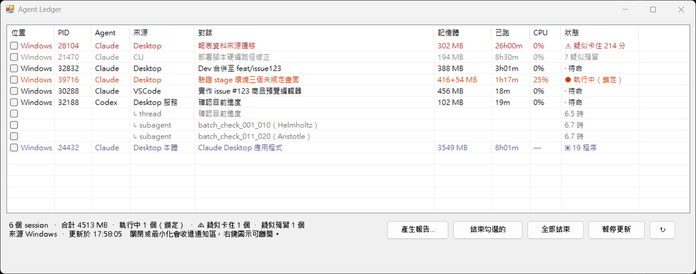
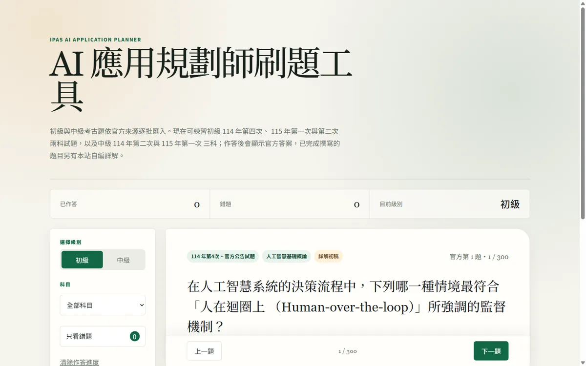

shinvo-shop 平台 Demo
前台＋後台可直接查看同一套建站平台的前台呈現與後台管理介面；請使用展示資料操作，不要輸入真實個資。
DEMO帳號：olivia@dgfactor.com.tw
密碼：demoshop1224
Selected Work / 案例
從平台轉型、政府標案、SaaS 上線到第一線支援，我先看清楚現場，再決定產品怎麼做。可直接試用、且由我掌握交付品質的產品入口放在最前面；往下則是各專案的情境、做法、結果與證據。
只放我能清楚說明產品責任與交付品質的入口；第三方自行維護的網站不列入作品展示。
可直接查看同一套建站平台的前台呈現與後台管理介面；請使用展示資料操作，不要輸入真實個資。
DEMO帳號：olivia@dgfactor.com.tw
密碼：demoshop1224
LINE 生態系的進銷存 ERP；涵蓋訂單、金流、配送派工與簽收流程。
LIVE實際服務入口：liff.linerp.co
獨立的 RAG 客服產品；目前以 LINERP 官方 LINE OA 作為實際接入範例。
TRYLINE ID：@594fgqbs
公司過去二十年是「一案一站」：每個品牌網站都是獨立專案、各自維護，需求到上線大約 30 天，維護成本隨站數線性成長。為了把一次性專案轉成可持續發展的產品，我們設計出一套共用後台與功能模型，前台再透過主題 CSS 與站點覆寫層呈現不同品牌的視覺效果；同一套系統因此能服務不同網站，功能升級與維護不必每站重做。團隊也從訊息與口頭追需求，逐步轉成有統一 Issue、發版紀錄與 ISO 27001 稽核文件的交付流程。
以上目前屬於需求與規格規劃，與下方已由我實作並落地的功能分開呈現。
這是一個媒合供應商與商家的 B2B 供貨平台：供應商可以上架商品、經營公開賣場並與既有合作商家交易；商家也能直接在公開賣場尋找合適的供應商、提出合作申請，再透過 LINE 完成日常叫貨。舊系統歷經多人接續修改，許多商業規則、畫面與流程各自寫死，缺少能跨角色共用的設計，修改一個需求常會牽動多條路徑。公司後來把整套系統交由我重新設計與重構，目前舊系統已退役。
tutorial-recorder：用腳本操作系統、產生旁白與字幕、重點推近，一行指令產出 mp4 ＋ srt；功能改版重錄也是同一行指令。觀看實際產出的教學影片。這不是從零開始的新產品，而是一套持續對外服務的政府影音平台。官網、App、影音播放、新聞、節目表、會員與後台都在同一個服務鏈上；既有功能不能停，新需求仍要持續交付，還要同時處理資安檢測、稽核文件、季報與跨單位溝通。專案經理不能只轉述需求，必須把每一次變更整理成工程做得出來、機關驗得過、正式環境也能安全切換的交付內容。
原本的節目表依賴既有外部來源與舊流程，這次改成由機關端上傳 CSV 到 Google Cloud Storage，系統自動抓取、檢核並更新前後台。看起來只是「讀一個檔案」，實際上會影響播出日期、跨日節目、腔調與分級顯示、側錄綁定、前台播放連結、失敗通知及既有資料是否被覆蓋；其中有些錯誤不會讓程式中斷，卻會讓播放連結或側錄靜默失效。
擔任 FAE 時，我服務近百家藥局，從新店建置、系統導入與操作教學，到調劑流程、健保申報、庫存與資料轉移，以及主機、網路和周邊設備串接都實際處理過。後來參與 Medira 藥局系統，一套涵蓋 POS、處方調劑、總部管理與健保申報，並採雲端架構與地端備援的藥局系統。
我參與 Medira 的價值，是把藥局第一線經驗帶進產品與專案決策：知道調劑人員實際怎麼操作、資料卡在哪裡、設備如何影響流程，也知道規劃新的雲端系統時，哪些風險需要從敏感資料、法規、設備與操作情境一起判斷。這讓需求、開發制度與驗收方式能更貼近真實現場。
每個產品原本就會在自己的 Repository 維護操作文件；如果為 AI 客服再複製一份知識庫，功能更新時就要同步改兩邊，也容易讓客服回答落後。我把它設計成獨立產品，直接讀取目標 Repository 的指定文件並建立 RAG 索引，再接到對應的 LINE 官方帳號。LINERP 是目前的實際接入範例，不是這套客服平台本身。
我先寫清楚使用情境、回答邊界、資料隔離、失敗處理與驗收方式，再用自然語言請 AI 分段實作、測試與審查。我會在真實 LINE 對話中驗證問法、追查回答依據，並確認知識同步、後台狀態與部署版本；AI 加快程式產出，我負責決定產品怎麼運作、什麼證據才算完成。
這套客服平台是獨立產品；目前可加入 LINERP 官方 LINE OA @594fgqbs，把 LINERP 當作實際範例，體驗 Repository 文件同步、RAG 問答與對話延續。
資安公告、套件停止支援、第三方 API 強制更新與重大相容性異動散落在不同來源。等到客戶、供應商或工程師轉貼訊息才處理，容易漏掉「這個專案到底有沒有使用、正式環境跑的是哪一版、修補是否真的已部署」這些關鍵差異。我把查核條件、證據標準與開票門檻寫成固定流程，讓 AI 先做每天都該做、但很容易被忙碌吃掉的第一輪巡檢。
讀官方維護者、廠商公告與安全資料庫；一般技術新聞只當入口，不直接當結論。
比對 manifest、lockfile、repo commit、部署分支與 runtime；把「程式有用」和「正式站受影響」分開。
用專案、元件、CVE／公告別名與根因查既有 Issue；只有新證據才更新，不每天重複留言。
達到門檻才開票，寫清楚來源、版本、觸發條件、未知事項、緩解方式與建議驗收。
另一個任務只讀真實巡檢結果，區分新票、實質更新、待確認與查核失敗；沒有新票也會回報。
持續追蹤、交叉比對、找差異、整理證據、依規則去重與建立追蹤。
決定優先順序、風險接受、正式需求、修補方案、是否部署，以及何時通知客戶。
核心原則：連線失敗不等於零風險、合併不等於已部署、版本字串不等於已確認受影響。AI 可以提早看到訊號，但最後的產品與風險決策仍由人負責。
工作之外，用同一套方法做自己的工具。共同點：有 README、有測試或資料規則、有明確的「不做什麼」。
管理本機所有 AI coding agent 的 session：即時看哪些在跑、對應哪個對話、吃多少記憶體，安全結束不需要的；指定期間把散落各處的對話歸納成任務，附 token 用量，產出可以直接交出去的工作報告。支援 Claude Code／Codex／Gemini CLI，Windows 原生與 WSL。
WHY不同 agent 願意公開的資訊差很多。README 最重要的一節是「支援程度」表：哪個 agent 能精確對到 PID、哪個只能整個結束——動手前先看懂，才不會砍掉正在跑的任務。


忘記切輸入法打出的注音亂碼自動還原成中文的 Claude Code skill：這個 PR dk3u3 merge 了嗎 → 可以。送出訊息當下由 hook 解碼，零指令。
WHY詞典分詞負責把音還原對，選字交給有上下文的 AI（部屬→部署）。72 個測試裡 27 個防誤判。

司法特考四等法院書記官考古題：9 科、1,090 題官方試題、850 題逐題解析、模擬考、錯題本、間隔複習、法條速查、申論考點總覽；PWA 離線可用。
WHY解析採「爭點、法律規則、套入本題、結論」；每題可一鍵回報勘誤；申論考點在真人審稿前一律標 draft。

初級與中級 12 份官方試卷共 600 題，逐頁對照官方 PDF，每題可追溯來源與頁碼；600 題 A–D 選項解析初稿。
WHY兩階段交付：先把全部題目匯入並核對答案，才開始批次詳解。AI 獨立複核以 10 題為一批留紀錄，永遠不會被標成人工複核。
9 種 Issue 表單（錯誤、功能新增、功能修改、任務、樣式、技術調研、文件、提問、線上事故）、PR 模板、Labels 初始化腳本、Projects 與自動化教學。
WHYStatus、Priority、Iteration 放 Projects 欄位，不用 Labels 重複維護，避免同一狀態出現兩份資料。
寫 AI 協作（我怎麼交代任務給 agent、AI 審查的隱形成本、一個案子從一年變三個月）、政府標案、需求釐清與轉職。近 30 天約 10 萬次瀏覽、近 700 位追蹤。
WHY經營方法跟做產品一樣：親自登入後台讀數據、每篇記錄瀏覽與回覆、用數據修正開頭型別，而不是憑感覺。